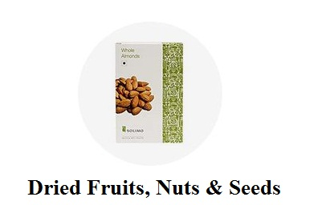
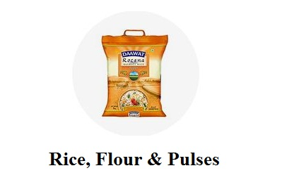
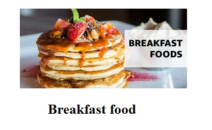
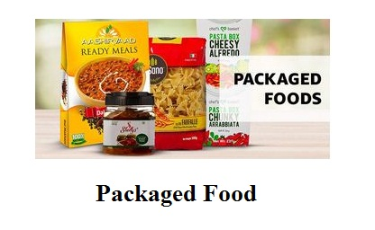

Dried Fruits,Nuts & Seeds:
A nut is a fruit composed of an inedible hard shell and a seed, which is generally edible. In general usage, a wide variety of dried seeds are called nuts, but in a botanical context "nut" implies that the shell does not open to release the seed (indehiscent).
Most seeds come from fruits that naturally free themselves from the shell, unlike nuts such as hazelnuts, chestnuts, and acorns, which have hard shell walls and originate from a compound ovary. The general and original usage of the term is less restrictive, and many nuts (in the culinary sense), such as almonds, pecans, pistachios, walnuts, and Brazil nuts are not nuts in a botanical sense.

Rice,Flour & Pluses
Rice flour (also rice powder) is a form of flour made from finely milled rice. It is distinct from rice starch, which is usually produced by steeping rice in lye. Rice flour is a common substitute for wheat flour. It is also used as a thickening agent in recipes that are refrigerated or frozen since it inhibits liquid separation.
Rice flour may be made from either white rice or brown rice. To make the flour, the husk of rice or paddy is removed and raw rice is obtained, which is then ground to flour.

Breakfast Food
Breakfast is the first meal of a day, usually eaten in the morning.The word in English refers to breaking the fasting period of the previous night.There is a strong likelihood for one or more "typical", or "traditional", breakfast menus to exist in most places, but their composition varies widely from place to place, and has varied over time, so that globally a very wide range of preparations and ingredients are now associated with breakfast.

Packaged Food
Bread, cheese, salted food and other prepared foods have been sold for thousands of years. Other types of food were developed with improvements in food technology. Types of convenience foods can vary by country and geographic region. Some convenience foods have received criticism due to concerns about nutritional content and how their packaging may increase solid waste in landfills. Various methods are used to reduce the unhealthy aspects of commercially produced food and fight childhood obesity.